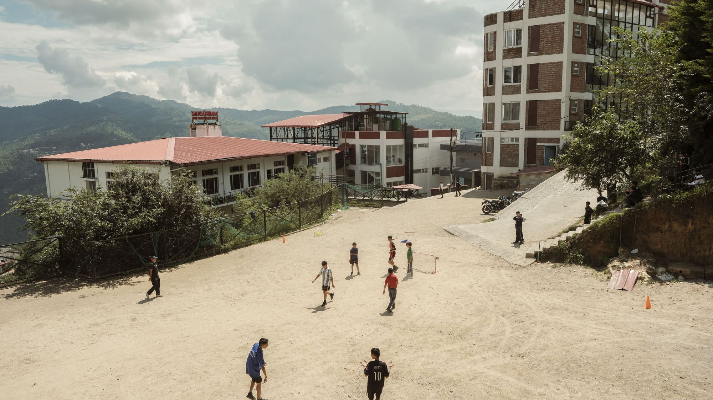
Nestled in the Deodar forests of Almora, Sharda Public School brings together world-class educators and a singular natural setting to offer an education unlike any other in India.
A rigorous CBSE curriculum from Nursery through Class XII, enriched by faculty drawn from India and across the world.
Explore Academics →Beyond academics — leadership, resilience, integrity, and a service ethic forged through mountain living and community engagement.
Our Values →A unique educational setting where snow-capped peaks, ancient Deodar forests, and the culture of Kumaon are part of the curriculum.
Himalayan Education →A thriving school community set against one of the most spectacular backdrops in all of India.
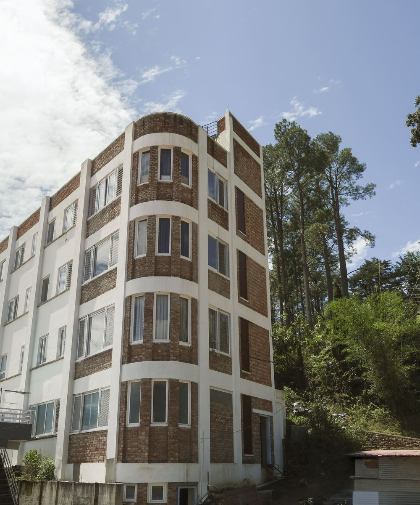
"Set among the Deodars, where every morning begins with the sight of snow-capped Himalayan peaks"
Sharda Public School stands in the foothills of Almora, Uttarakhand — at the edge of the Kumaon Himalaya, where ancient Deodar forests meet some of the world's most spectacular mountain views.
We offer a complete education from Nursery through Class XII under the CBSE curriculum, across two campuses in Almora, supported by a faculty of dedicated educators. Our students leave as scholars, athletes, artists, and above all, thoughtful human beings.
Many of our alumni have gone on to the IITs and the nation's most prestigious universities — carrying the spirit of the mountains into every endeavour.
Deodar forests, snow-capped peaks, and the Kumaon sky — nature itself is part of the education at SPS.
Educators who bring global methods and world perspectives into every classroom.
Two decades of graduates at India's finest institutions — IIT, NIT, AIIMS, and beyond.
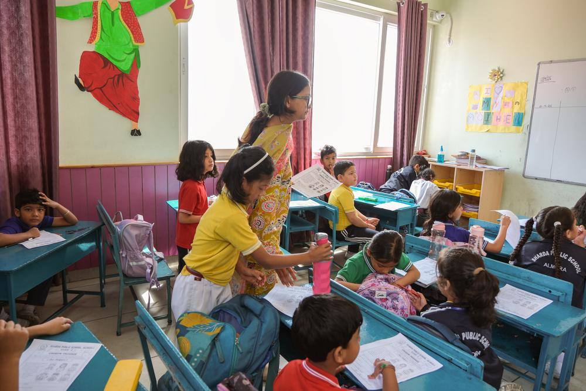
Nursery – Class V at our Junior Branch, Khatyari. Play-led foundations building curiosity, language, numeracy, and love of discovery. Bilingual foundation in Hindi and English.
Nursery – V →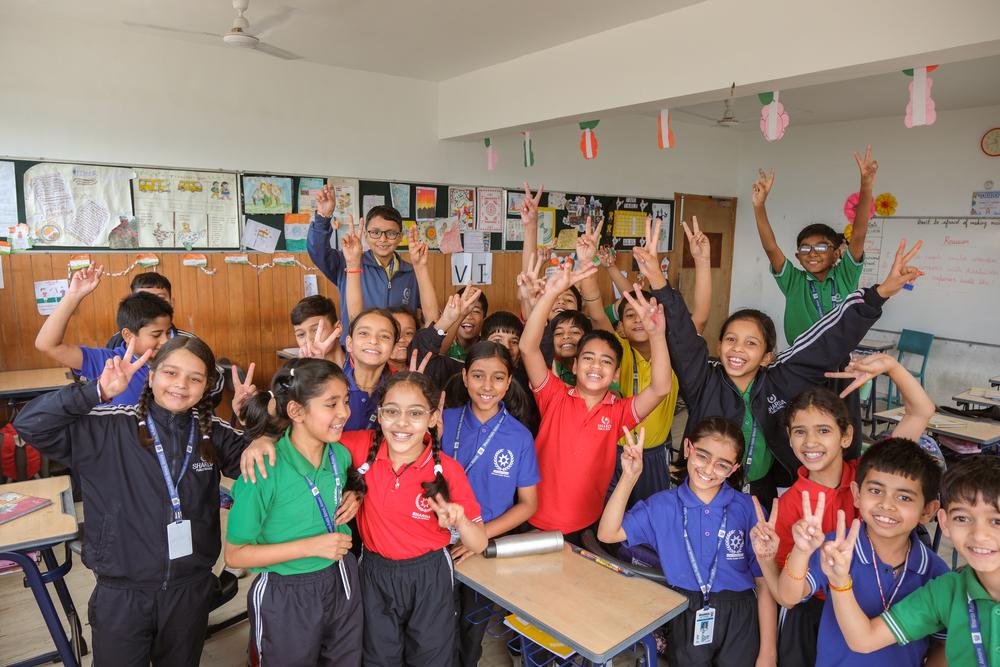
Classes VI–VIII. Structured subject specialization with dedicated science labs, mathematics enrichment, and social science foundation.
Grades VI – VIII →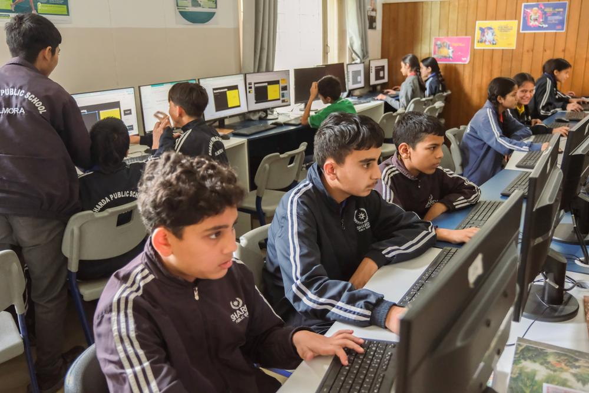
Classes IX–X. Comprehensive CBSE board preparation, skill development, and holistic examination training.
Grades IX – X →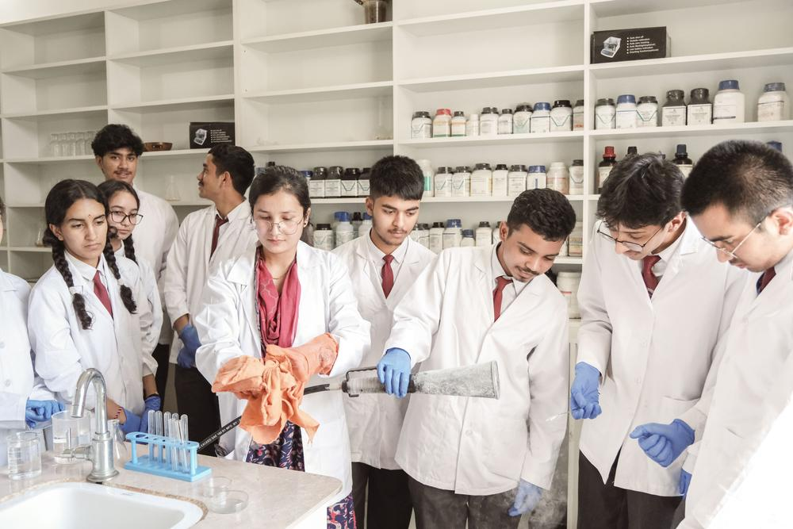
Classes XI–XII in Science, Commerce and Humanities streams, with one-on-one career counselling and college preparation support.
Grades XI – XII →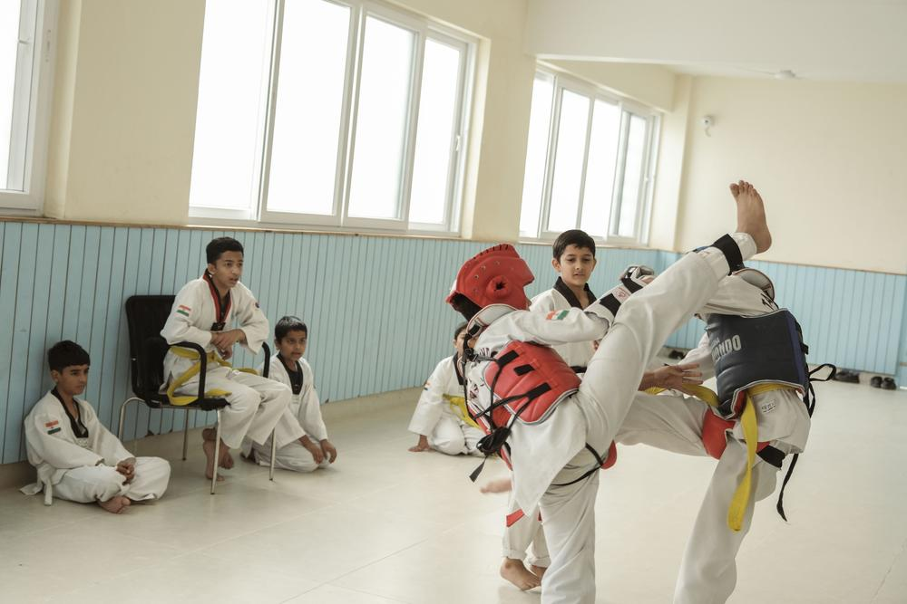
Cricket, football, athletics, yoga, trekking. Music, drama, visual arts, debate — every student finds their calling beyond the classroom.
All Grades →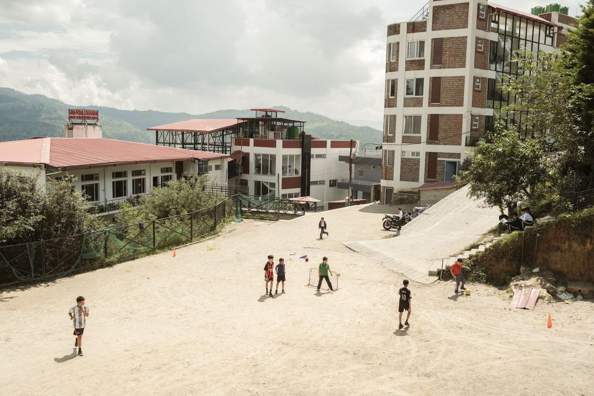
SPS's signature program — field ecology, geology, forest walks, astronomy sessions under Kumaon's extraordinary night sky.
Signature Program →Growing up at SPS meant growing up with the mountains. The school gave me not just a top-tier science education, but a perspective — about what matters, what endures.
Read More →I came from Delhi and was nervous about a school in the mountains. Now I cannot imagine a better place to learn — or a better view from a classroom window.
Read More →I have taught in schools across three continents. The hunger to learn that SPS students carry — in these extraordinary surroundings — is unlike anything I have encountered.
Read More →I assure that the doors of our Institution will always be open to both students and their parents.
It is both an honour and a privilege to serve as the Principal of Sharda Public School, an esteemed institution renowned for its commitment to excellence and its continuous efforts to establish the highest standards of education in Almora.
Our students have brought us immense pride by reaching exceptional milestones and achieving remarkable success at the state, national, and international levels in academics, sports, and co-curricular activities.
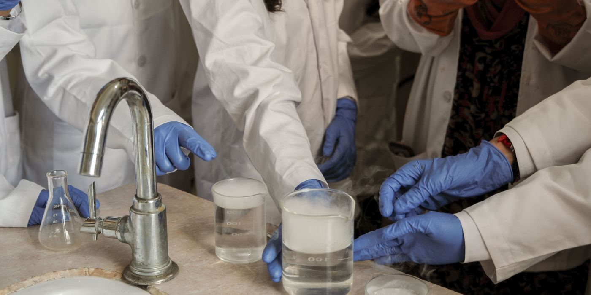
Students from Classes VI–XII presented original research projects on Himalayan biodiversity, glacier monitoring, and sustainable mountain living at this year's flagship event. Over 40 projects were exhibited before faculty, parents, and invited scientists from Kumaon University.
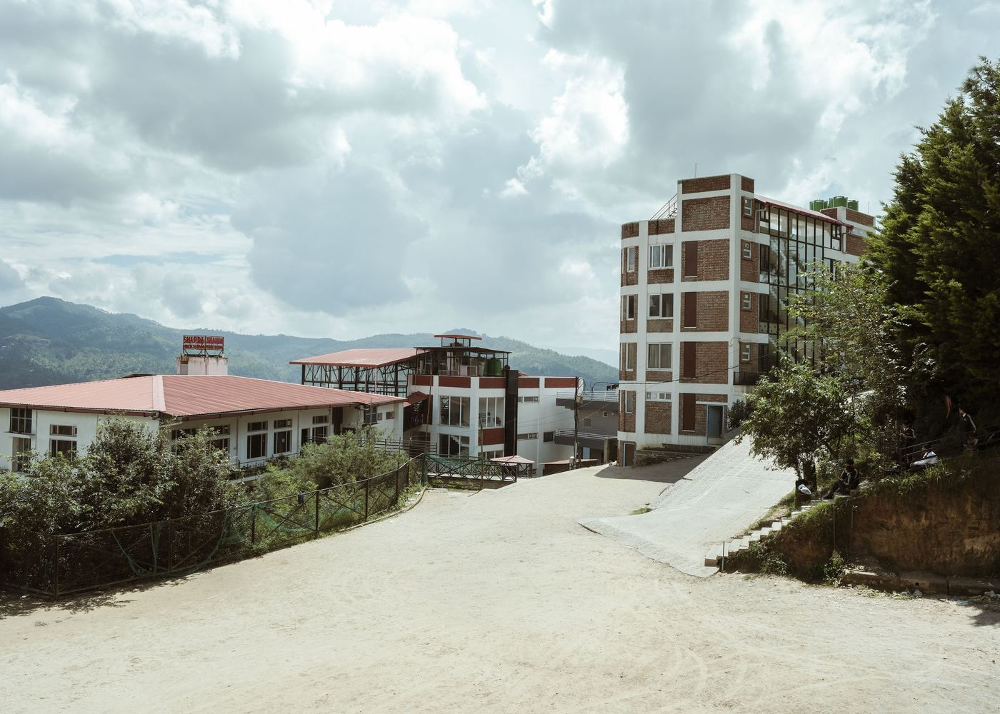
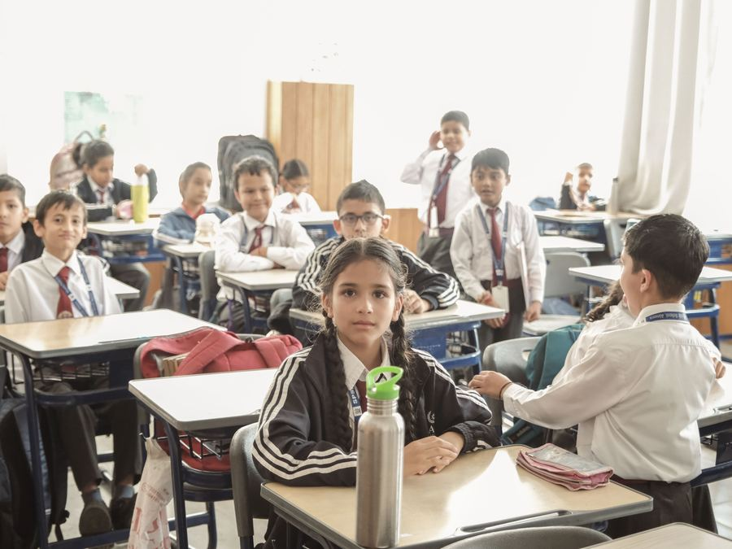
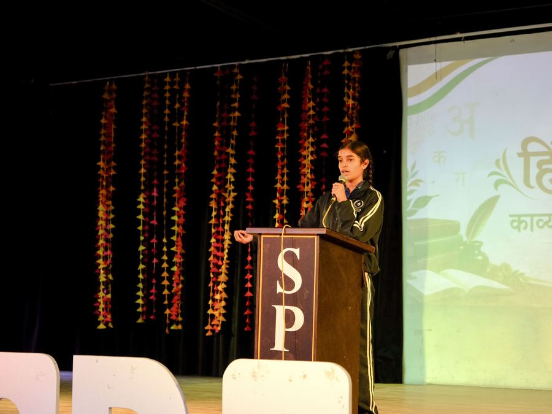
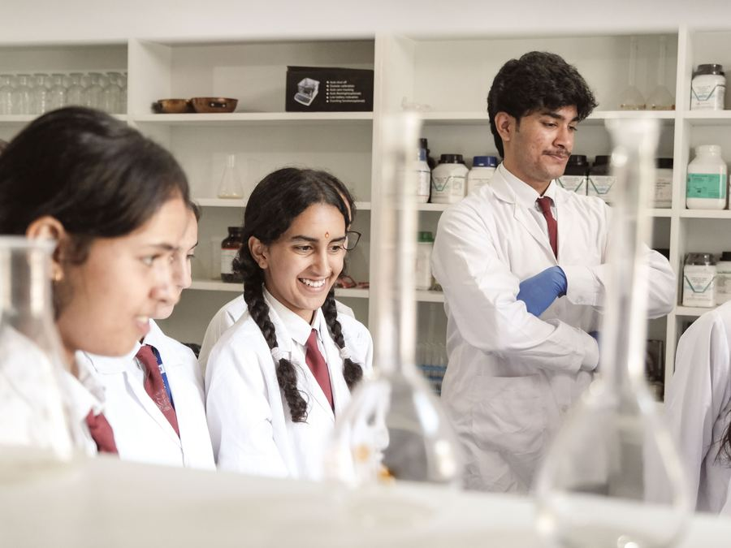
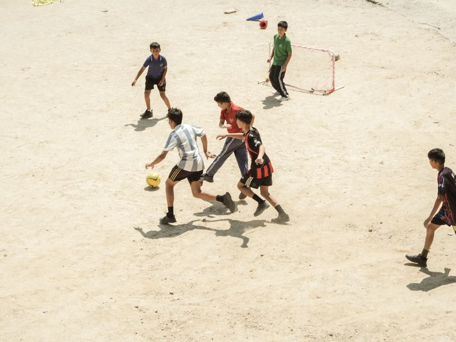
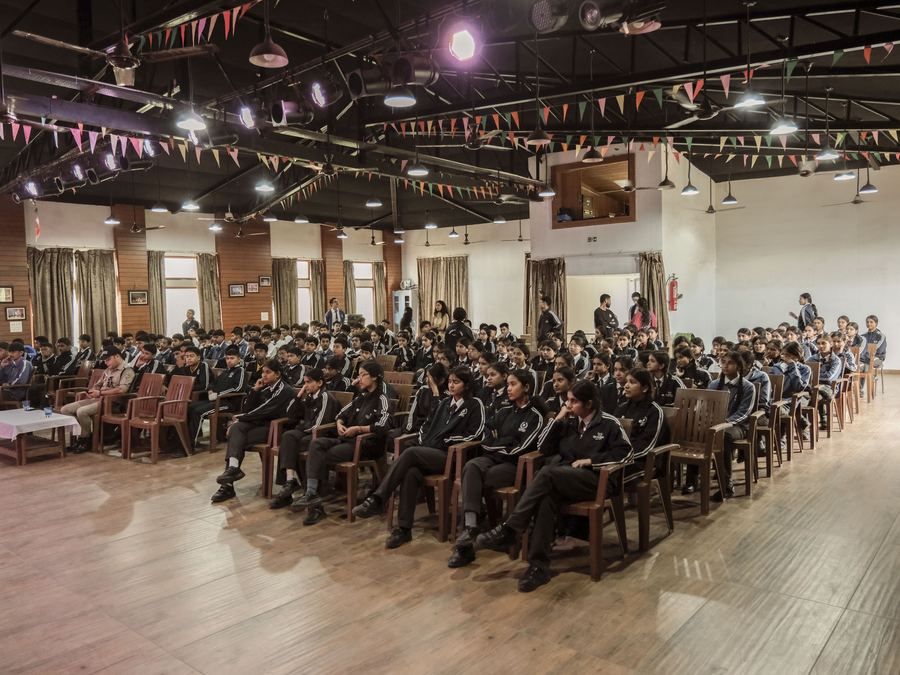
Admissions for Session 2025–26 are open from Nursery to Class XI. Every admission begins with a conversation — visit us, walk through the classrooms, meet a teacher, then decide.
Visit our campus or connect with us to understand our programs and environment.
Collect the admission form and submit it with the required documents.
A brief, age-appropriate interaction or assessment to understand class readiness.
Admission is finalised after document verification and fee submission.
Age criteria, what happens on assessment day, fees and FAQs — everything is on the admissions page.
"Sharda Public School didn't just prepare me for IIT — it taught me how to think. The faculty, the environment, the mountains… there is no place quite like it."
"As a parent, I could not have chosen better. My daughter has blossomed — academically and as a person. The values SPS instills are for life."
"Teaching at SPS has been the most rewarding experience of my career. The children here have a hunger to learn that is absolutely infectious."
Junior Branch (Nursery – V)
Khatyari, Khagmara Kote, Almora — 263601
Senior Branch (VI – XII)
Near Circuit House, Dugalkhola, Almora — 263601
+91 73005 02640 · 05962 236611
Admissions office: Mon–Sat, 8:30 AM – 2:30 PM
Principal's office, help desk, feedback & testimonials — all on one page.
Visit About →
Nestled in the foothills of the Kumaon Himalaya,
surrounded by ancient Deodar forests.